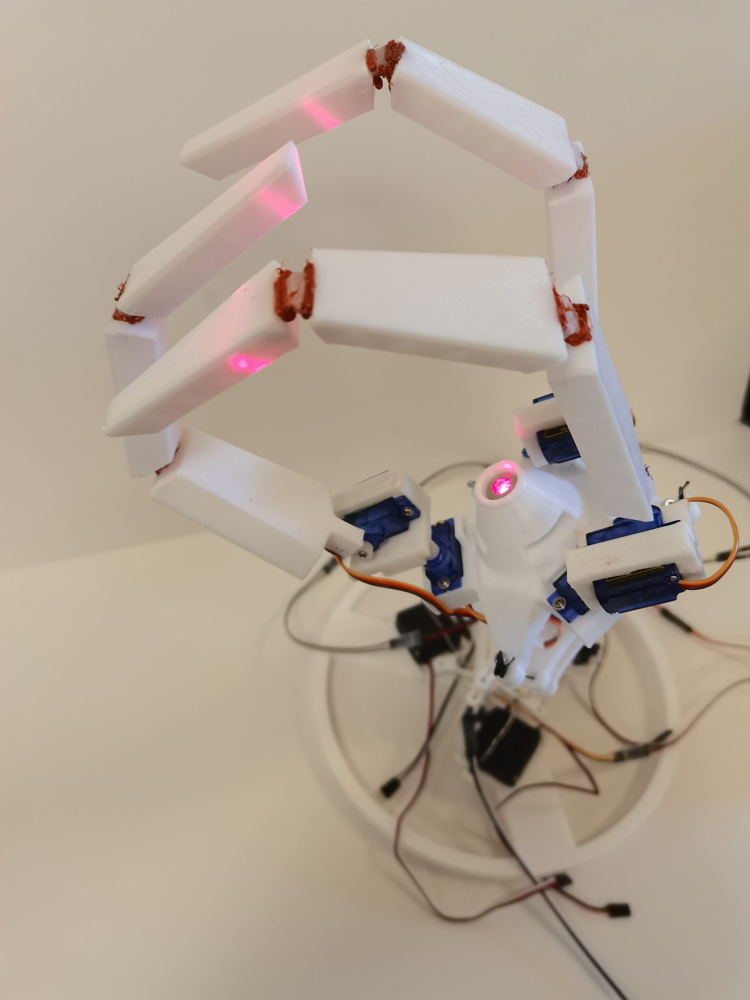
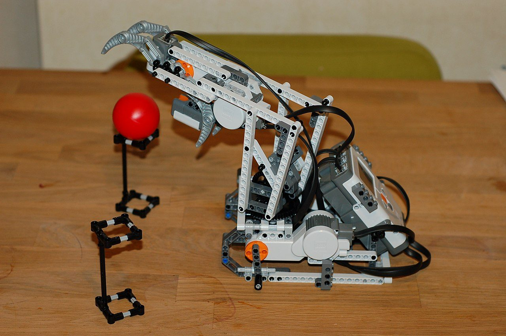

All projects
Doctor Octopus Robotic Arm
A 2-DOF tendon-driven arm with a 6-DOF claw that grasps spherical and cylindrical objects.
Tendon-Driven
6-DOF Claw

Engineered a modular tendon‑driven robotic arm with two primary degrees of freedom and a six‑degree‑of‑freedom claw. Servomotors and tendon routing enable remote actuation, while the modular design allows interchangeable gripper configurations. The claw can wrap around spherical and cylindrical objects, making the system suitable for versatile pick‑and‑place tasks.
Highlights
- Tendon‑driven 2 DOF arm decouples actuators from end‑effector — motors stay at the base, the arm stays light.
- 6 DOF claw with three pairs of opposing fingers conforms to spherical and cylindrical objects.
- Modular gripper interface — different end‑effectors can be swapped without rewiring the arm.
Skills & Technologies
- Tendon‑driven Mechanism
- Underactuated Grasping
- Servo Control
- Modular Mechanical Design
Gallery
